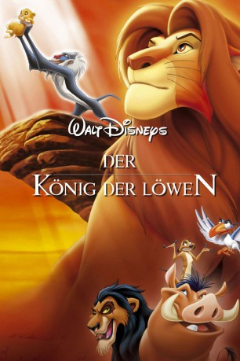

Alternativ: The Lion King
Auszeichnungen: 2 Oscars gewonnen für 2 Oscars nominiert 3 GoldenGlobes gewonnen 1 BAFTA-Awards gewonnen
 
 IMDB-Wertung: 8.5 / 10
IMDB-Wertung: 8.5 / 10  IMDB-TOP-Platzierung: 45
IMDB-TOP-Platzierung: 45  Metascore:
Metascore: 
Unter der Obhut seines Vaters Mufasa wächst der Löwenjunge Simba unbeschwert heran und soll eines Tages dessen Platz als König einnehmen. Aber bis dahin ist es ein langer Weg, der Simbas ganzen Mut erfordert. Stets begleitet von seinen witzigen Freunden Timon und Pumbaa und deren urgemütlicher Lebensphilosophie “Hakuna Matata”, muss Simba sich seiner größten Herausforderung stellen: dem Kampf mit dem hinterhältigen Scar um die Herschaft über das “geweihte Land”...
Jahr: 1994
Dauer: 89 Minuten
FSK: 0
Land: USA Studio: Buena Vista PicturesTonspuren: DTS - ,
Untertitel: Deutsch,
Auflösung: 1080p (1920x1080) Größe: 4792 MB
Genre: Drama, Abenteuer, Animation/Trick, Familie, Musical
Regisseur: Roger Allers, Rob Minkoff
Drehbuch: Irene Mecchi, Jonathan Roberts, Linda Woolverton, Burny Mattinson, Barry Johnson
Soundtrack: Hans Zimmer
Darsteller:
Datei: X:\Kinder Disney HD\König der Löwen\König der Löwen 1, Der (1994, FSK0, 1920x1080) 3D.mkv seit 09.11.2015
Festplatte: Kinder-Filme+Trick
 Es gibt insgesamt 10 Filme in der Gruppe 'Kinder Disney HD\König der Löwen'
Es gibt insgesamt 10 Filme in der Gruppe 'Kinder Disney HD\König der Löwen'